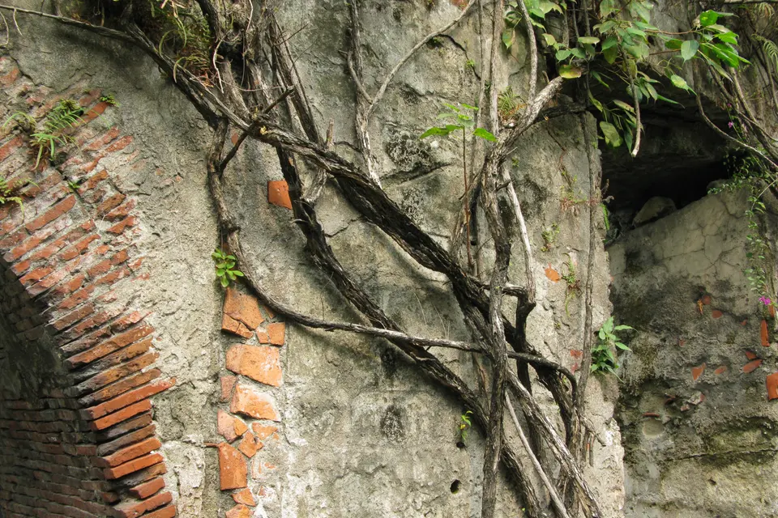

Historic District
Intramuros
Known as the "Walled City," Intramuros was built in the late 1500s as the seat of Spanish power. Visitors can stroll cobblestone plazas, walk along the thick adobe-stone ramparts, and ride bamboo bicycles past preserved colonial courtyards.